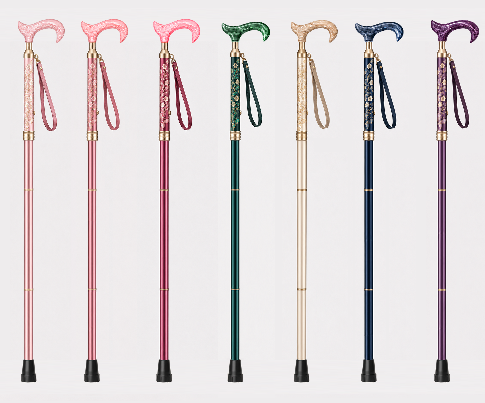

面向日本熟龄市场的铝合金精品拐杖品牌。三平台真实数据 · 6维度竞品分析 · 16款方案文化匹配度评审 · 优化方向与首发策略。
三平台一致显示，低价印花（3,000-5,000円）被评价为"有设计无高级感"；而 8,000-15,000円正是"高品质+印花"的临界甜区——印花必须配合碳纤维/木制等高级材质、SG认证、精细做工才能获得正面评价。这构成"杖景"品牌进入该价格带的核心逻辑。
装饰拐杖在中高端带占比35-60%，日本消费者对"おしゃれ杖"接受度高。纹样以樱花/整体花卉/和纹几何为主流，"介護用品感がない"成核心赞美词。
轻量化是好评基础，250-290g为黄金区间。细颈（スリムネック）人体工学针对握力弱老人成趋势。"軽量+おしゃれ"组合最受好评。
12,100円为花柄女性向价格共识锚点，同质化定价集中。8-12K円带产品密度高但差异化不足，存在"碳纤维+精品和风"组合缺口。
中高端带功能竞争已饱和（折叠100%渗透、SG认证80%+），差异化转移到材质与设计。智能功能渗透率<15%且集中在低价带。
矩阵显示 8,000-15,000円 + 中高评分 区间存在空白：KISS MY LIFE 靠布印花+日本制占据12,100円；Hospia靠满印花柄碳纤维占10,500円；近江一文字靠3D色碳纤维占17,380円。无人覆盖"原创和风现代化纹样 + 亚克力内嵌手柄"组合，这正是杖景的核心差异化空间。
樱花、整体花卉（総花柄）、Liberty/William Morris IP授权是三大主流。"和风传统纹样现代化"（青海波/水纹/扇面/鹤）在8-15K円带存在明显空白——现有和风款多为京都老铺高价手绘（18,700円+），或低价满印。杖景的"克制和风+现代构图"恰好卡位中间空白。
基于乐天/Yahoo!购物爆款花柄款还原示意图（仅作造型与纹样参考）
女性向主打：珍珠白/薄红梅/藤紫/香槟金 — 占女性向销量 70%，对应"优雅+不廉价"核心诉求。
男性向主打：瑠璃色/藏青/深棕/墨色 — 男性向8-15K带中性和风款缺口明显（青海波/水纹可卡入）。
礼赠溢价色：香槟金金属点缀+日本传统色名叙事 — 比素色款溢价30%+，KISS MY LIFE/神戸ステッキ均已验证。
| 缺口类型 | 描述 | 机会等级 | 杖景回应 |
|---|---|---|---|
| 设计缺口 | 亚克力内嵌花卉手柄+和风纹样杖身组合，市场无人覆盖 | ★★★★★ | 核心差异化 |
| 材质缺口 | 8-12K円带"碳纤维+精品和风印花"组合产品稀疏（核心带仅5款） | ★★★★☆ | 系列Ⅰ机会 |
| 体验缺口 | 真正轻量(<290g)+装饰性+人体工学细颈的组合不足 | ★★★★☆ | 重量指标必达 |
| 礼赠缺口 | 有包装但缺"纹样寓意+长寿祝词+年龄节点"完整故事体系 | ★★★★☆ | 礼赠五件套 |
| 男性缺口 | 中性现代和风（青海波/几何/水纹）在8-15K円带少 | ★★★☆☆ | 星籠青海覆盖 |
| 饱和区 | 樱花满印+铝合金低价款已饱和（Habilis/Hospia） | 避开 | 走克制路线 |
| 系列 | 材质 | 定价(円) | 定位 |
|---|---|---|---|
| 系列Ⅰ | 碳纤维+亚克力内嵌手柄 | 13,800-14,800 | 旗舰形象 |
| 系列Ⅱ | 铝合金细管(19+16mm)+木柄 | 9,800-11,800 | 走量礼赠 |
| 系列Ⅲ | 铝合金+琥珀纹手柄 | 11,800-13,800 | 中间过渡 |
月夜梅影（品牌形象款）+ 星籠青海（中性男性市场）+ 银杏和光（礼赠长寿款）+ 夜海流金（深色旗舰款）。四款覆盖女性/男性、形象/礼赠、浅色/深色，验证市场后扩展第二梯队。
综合第一梯队文化匹配度评分、市场缺口（8-15K円带和风空白/男性中性款缺失/礼赠故事体系）、色彩策略（女性珍珠白/薄红梅/藤紫/香槟金 · 男性瑠璃/墨色/深棕）三大维度，从16款方案中精选6款主题，覆盖女性向/男性向/中性三类人群与旗舰/礼赠/浪漫三大场景，每款均配日本传统色名、文化寓意与建议定价。

工艺分两步，第一步阳极氧化生成7色基础杖身（成熟铝合金表面处理工艺，精度可控），第二步在第一截进行UV平板打印，将白色梅花图案+香槟金蕊高精度直接打印至杖身曲面。同纹样7色共享一套打印定位治具，无需重复开模。
| 类别 | 部件 | 说明 | 单价(元) |
|---|---|---|---|
| 杖身 | 铝合金管身 + 阳极氧化 | 四截伸缩 · 含成型/裁切/冲孔/阳极氧化着色 | 15.72 |
| 连接件 | 弹珠 | 不锈钢弹珠 | 0.32 |
| 弹力塞 | 弹力塞 | 0.2 | |
| 松紧圈 | 松紧圈 | 0.15 | |
| 手柄连接件 | 手柄与杖身接口连接件 | 7.8 | |
| 雌雄接头 | 两件总价(四截连接) | 12.34 | |
| 伸缩管拼紧螺母 | 伸缩管固定螺母 | 2.93 | |
| 底部 | 底脚 | 橡胶/TPR注塑 | 1.5 |
| 手柄组件 (实测) | 亚克力手柄 | 珠光亚克力(7色配色) · 可嵌金箔 | 9.0 |
| PU皮手绳 | 同色PU皮+金属调节扣 | 1.5 | |
| 手绳连接件 | 手绳与手柄连接件 | 1.52 | |
| 手绳扣 | 手绳调节扣 | 0.5 | |
| 纹样 | UV打印梅花 | 第一截中段 高140mm 宽30mm · 待报价 | 6.0~12.0 (估算) |
| 包装配件 (参考6超艺) | 彩盒 | 43×19×9.5cm | 4.0 |
| 说明书 | — | 1.0 | |
| WARNING标 | — | 1.0 | |
| 品牌卡 | 60×70mm | 1.0 | |
| 单支总成本估算（含包装/UV按中位¥9/不含SG认证摊销） | ≈ ¥69.5 | ||
以月夜梅影系列7色为首发核心，验证市场反馈后逐步追加星籠青海（中性男款）、银杏和光（礼赠款）等其他主题。